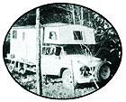

The year prior to our 1975 outing, my husband (Robert, alias Roberto, RoBear, or Bobby) and I had made the acquaintance of a young, Okanagan organic farmer named "Hank Dirt". In the winter, we contracted with him to raise fairly large quantities of certain commodities for us, and told him that come July-on our annual cherry/apricot/peach-picking journey-we'd be glad to stop by and help with the hoeing of our vegetables in return for a reduced price on the goods. He agreed to this arrangement, and asked if Roberto and I would mind bringing along some seaweed for fertilizer.
Well, foraging for seaweed is one of our favorite occupations anyway, so we didn't mind at all. Bobby and I proceeded to harvest a two-ton-truck-load of "tossed salad"-storm-shredded kelp, eelgrass, rockweed, and dozens of other varieties of giant algae in shades of green, brown, white, and hot pink-seasoned (so to speak) with sand, shell particles, and fine wood debris. After collecting the "weeds", we spread them out to be washed by the rain (fresh seaweed is too salty for use as fertilizer) and dried by the sun. Tending and tedding it like hay, we eventually had a third of a truckful of choice, dry fertilizer to take to Hank's place.
When Roberto and I-and our 6-year-old son, Faro, and 2-nearly-3 daughter, Reina-arrived at Dirt's farm on July 18, we found Hank way behind in his hoeing. The grass, pigweed, and nightshade were choking his soybeans, squash, corn, and tomatoes so badly-in fact-that he immediately offered us a credit of $4.00 per hour to hoe for him . . . which was all the excuse we needed to pick up our tools and get to work.
After gently prodding Hank with "How long have we been hoeing so far?" and "What d'ya think the kids' work is worth?", we came right out and asked our young farmer friend if we couldn't swap the whole family's efforts for produce. The deal which resulted was very satisfactory all the way around: We'd hoe a certain area then and be "paid" with twenty 40-pound boxes of tomatoes in September.
Then came the question of the seaweed. "What do you figure all that fertilizer's worth?" our friend asked.
"Well, Hank," Roberto answered, "we've put so much love and labor into that weed that it's beyond price . . . so we'll just have to give it to you."
Dirt pulled his beard and chuckled. "You know, Bobby, that's exactly how I feel about my vegetables. So while you're here, you just take all the fresh vegetables you can eat."
In this way, Hank got his high-quality fertilizer for the farm . . . and we-in turn-wound up with plenty of onions, new red potatoes, cucumbers, kohlrabi, and sweet corn.
Next, while we were camped out at Hank's, we discovered eight fruit ladders-ranging from 8 to 18 feet in height (each of which would cost up to $100 new)-just lying in the grass, left over (apparently) from the time when the farm had been an orchard. After a quick huddle with Hank we had another deal on our hands. Using the tools and the scraps of lumber and other odd hardware we always carry, it took Robert and me only a day to repair all the ladders. Then Hank selected four for himself, and we got the others. (They were most useful to us, too. From that day on, whenever we talked up deals with farmers to clean their orchards of fruit, we could always say "We have our own ladders and buckets" . . . and we'd get the job.)
Both Hank's family and ours like to dry fruits and vegetables, and it just so happened that our farmer friend had a plastic covered dome that warmed up fast when it was set out in the sun. So we arranged a third deal: Hank would provide screening, staple gun, and free access to his private junk lumber pile . . . and we'd construct eight 2' X 6' drying racks-covered with fine fiberglass screening-which we could all then share.
Well, we built the racks, and we did dry some of our cherries on them . . . but when all was said and done, we didn't really come out even on the exchange. Roberto simply shrugged and said, "You can't expect to make good on every deal." As luck would have it, though, this imbalance was corrected at a later date.
We stayed at Hank's for another week, and then decided to move on. Our swap experiences didn't end then, however . . . because after various deals and scrounges-and untold hours of work in farmers' orchards-we ended up with 1,200 pounds of cherries, and 1,000 pounds each of apricots and peaches to take home as a supplement to some cash wages.
And there were more deals yet. Once, as we were driving along one night at three o'clock in the morning, the semi ahead of us began to accidentally rain 50-pound sacks of chicken feed along the freeway. We salvaged $20 worth of the split sacks of hen scratch, and-after living around the stuff for a couple of weeks-finally located a homesteading family that could use it.
"What can we trade you for the feed?" they asked. Well, the family's hens weren't laying many eggs at the time, and their goats weren't giving much milk (and we didn't care to swap for rabbit carcasses). So we gave them the scratch, and someday we'll get something interesting in return . . . perhaps a collection of native plant seeds.
On another occasion last summer, some fellow "gypsies" stopped at our camp to compare notes on sources of fruit, drying techniques, the orchard job situation, kids, travels, trucks, etc. Before they'd left, we had swapped them a box of choice late cherries for two boxes of cull apricots.
We arrived back at Hank Dirt's farm on September 17, only to find our friend in a bit of a quandary: He was burdened with a field of luscious, ripe-and ripening-organic tomatoes for which he had no buyers. The local market was absolutely glutted . . . and those 'maters wouldn't sell at ten or nine or seven or even five cents a pound. Yet, two hundred miles away-over the mountains-lay the city of Vancouver, where people were paying 59 cents a pound for tomatoes shipped all the way from Mexico!
Well, what else could we do when [1] we had a two-ton truck sitting idle in front of us, and [2] we-all of us-were interested in turning a profit? Bobby and I unpacked our "truck-house" and spent the next three days picking (and packing) tomatoes. My husband then started for the coast with nearly 4,000 pounds of the perfect fruit.
Ten days later, he staggered back. It had been one of those disastrous treks where people don't keep all their promises, and containers unaccountably collapse . . . where opening hours and ferry ticket-takers and food co-op buyers all seem to conspire against you. Poor Bobby had sold tomatoes, traded tomatoes, thrown rotten ones away, dumped others on friends' doorsteps, and canned 400 pounds of the pulpy fruit at home. When he returned, he gave Hank enough cash to cover the value of the goods that had survived the journey. Still, we'd not only failed to make wages on the deal . . . we'd actually lost money. Hank (bless him) had accepted the risk of this venture along with us, however, and so he compensated us for our loss with 800 pounds of acorn squash on the vine.
While Roberto had been gone, I'd begun to pick and dry and bottle the twenty 40-pound crates of tomatoes we were to receive as part of our July hoeing swap. We worked on the fruit for more than a week, cutting off tops and bottoms of the juice-filled tomatoes to cook and bottle as sauce . . . and slicing the meaty centers into thin wheels which became-after four days on the drying racks-tissue-thin "stained tomato windows" of potent flavor. (This is where the drying-racks swap finally balanced out, after all.)
By the time we'd finished with the tomatoes, it was early October and the grapes were coming on, so we bid farewell again to the Dirt farm and headed-this time-for a vineyard. Once we'd landed on one, we worked out a deal with the owner that allowed us to camp on his property while we helped him harvest grapes. In addition, we got to keep a pound of grapes for every 12 to 15 pounds we harvested.
Grape picking is interesting work. You get to eat a lot of the sugary-tart little spheres (which slows you down), you quickly develop purple hands, and occasionally you snip your fingers with the shears. I had the distinction, too, of being bitten by a mouse that was on one of the bunches of grapes I grabbed.
During our stay, Roberto made a deal for some of the big, stout plastic crates in which wine grapes are shipped. The baskets-which'll hold 50 pounds or more each-are ingeniously designed to stack one way, and nest the other. It seemed that the owner had quite a number of the containers on hand which had cracked . . . and at $10 apiece, brand new, he was (understandably) reluctant to throw any of the crates away. So Bobby-with the aid of an electric hand drill and lots of thin plastic-coated wire (salvaged from old electric blankets)-laced the splits together and mended ten containers. As payment, we got to keep five for ourselves.
It was about then that our cup began to run over and all the picking we were doing got to be a bit much. We already had more squash, bottled tomatoes, fresh tomatoes, corn, onions, cull plums, and cull apples than we knew what to do with . . . and some of the grapes we'd harvested for ourselves were wilting. So we pressed 500 pounds of our muscats and gave the mash to the vineyard owner for "second wine".
In the meantime, I carefully picked the remainder of our eatin' grapes. Unfortunately-though-I over picked, we found ourselves with $9.00 worth of grapes more than we'd earned, and we couldn't pay for them. The owner at first just agreed to take it out of my hide the following year, but before we left he came beaming to the truck to say that the muscat mash we'd given him was worth my overrun. Thus, our accounts were balanced after all.
As Robert, Faro, Reina, and I departed the Similkameen Valley in our weary and heavily burdened truck, we found it necessary to make one more swap. A friend had driven our Austin out to the valley with us, but was no longer around to drive it back . . . which meant we had two vehicles-the car and our two ton truck-to take home, and only one driver (namely, Roberto). Fortunately, we soon met a lady hitchhiker who agreed to drive the auto back in return for the transportation.
Yet another exchange occurred when we stopped overnight at a hostel and traded plums, tomatoes, and one crate of grapes for our family's supper and breakfast.
Finally, on October 19, we arrived home with a tremendous abundance of grapes and squash that we knew we could always trade for National Geographics, carrots, elderberry wine, or any of a half million other items.
"What a summer of hard work!" our friends exclaim when we tell them about our trip. Sure it was hard. But it was also fun not to mention healthful-and we had our children right there with us all the time. We got to know farmers, and we saw the very soil and water and care that produced the food we're eating. And what food! Brilliant tomato sauce, succulent squash, flavorful dried fruit, and our own sparkling muscatel wine.
More important to us, though, is the fact that our children now know about the origins of things. They've hoed and picked and helped preserve fruits and vegetables themselves. Daddy doesn't just go off to some mysterious place called "work" every day and bring home a piece of paper so that mommy can go to the supermarket and buy cans of something called "food".
The trip, if nothing else, taught all of us something about how barter works . . . how, magically, you can be sure you've gotten the better deal, while-at the same time-the other fellow is just as certain he came out ahead.
Everything considered, I think we really did get the best part of the bargain from our 1975 "swap summer".
|
 |
|
|